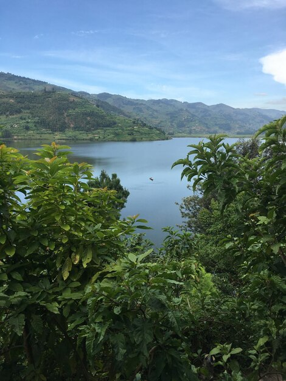

Nacional del Manu y Reserva Nacional de Tambopata
1.Reserva Nacional del Manu

- Ubicación: Región Madre de Dios y parte de Cusco, en la Amazonía peruana.
- Biodiversidad: Es uno de los lugares con mayor biodiversidad del planeta. Alberga miles de especies de flora y fauna, incluyendo jaguares, tapires, monos, aves exóticas y reptiles.
- Ecosistemas: Combina ecosistemas que van desde la selva baja hasta la alta montaña, incluyendo bosques húmedos tropicales y páramos.
2.Reserva Nacional de Tambopata

- Ubicación: Región Madre de Dios, en la Amazonía peruana.
- Biodiversidad: Destaca por su alta diversidad biológica, incluyendo la presencia de guacamayos, monos, caimanes, y el emblemático jaguar.
- Ecosistemas: Selva tropical húmeda con ríos y lagunas, ideal para la observación de aves y vida silvestre.
3.Comunidades indígenas:

- Viven en armonía con la naturaleza, manteniendo sus prácticas tradicionales.
- La reserva protege sus derechos territoriales y culturales.
4.Desafíos de conservación:

- Combate a la minería ilegal y al tráfico de especies.
- Protección contra la tala ilegal y el avance agrícola.